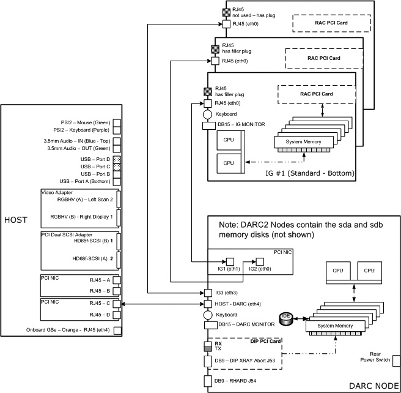
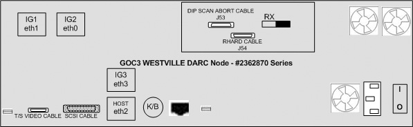
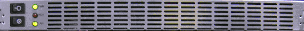

Operating Documentation
Direction 5224328-800, Rev# 5
Dir 5224328-800 LightSpeed 5.X HP60 Limited Access Service
Methods - Adv.
Operating Documentation |
| Required Persons | Preliminary Reqs | Procedure | Finalization |
|---|---|---|---|
| 1 | Timing Not Applicable | 35 mins | 20 mins |
This procedure describes the replacement of the GOC3 Operator Console Image Generator (IG) Node(s).
Verify DARC Node is able to access remote shell successfully.
Perform initialization of each IG Node (repower sequence).
Perform diagnostics for the IG Node RAC(s)
Start up the application software and verify that image_generation is running for each IG Node.
Halt the process, then repower the Operator Console and bring it up to application software to make sure image_generation is running.
Perform a Recon Data Path test.
Perform sanity scans (e.g., scout, axial & helical).
| NOTE: | Whenever a Jarrell type IG Node is used, it MUST be placed in the bottom standard slot 1 position. The Ethernet cable identifying the bottom IG #1 must be correctly connected between the DARC Node and the IG Node. If two Jarrell IG Nodes are present, the second Jarrell IG Node must be placed in slot 2 (middle). |
| NOTE: | Jarrell DARC and Jarrell IG Nodes require software release 06MW29.7 or more recent. |
| NOTE: | SDAS 4-slice, MDAS and GDAS 4-slice and 8-slice systems cannot upgrade from the 1 single/standard IG Node to the 3 IG Node upgrade option. |
| Last Revised: | 21 March 2008 |
| Item | Qty | Effectivity | Part# | Manufacturer | |
|---|---|---|---|---|---|
| Medium Phillips Screwdriver | 1 | - | - | - | |
| Item | Qty | Effectivity | Part# | Manufacturer | |
|---|---|---|---|---|---|
| IG Node (Westville) | - | 2362872 | Omni Tech Corp - Dedicated Computing | ||
| IG Node (Jarrell) | - | 5147443 | Omni Tech Corp - Dedicated Computing | ||
| Shielded Ethernet Cable | Use w/Jarrell IG Nodes | 5127222-2 | - | ||
| All cable connector screw-locks must be finger-tightened, only. Do NOT use any tool to tighten cable screw-locks. | |
| Follow ALL required safety and PPE procedures customary for your organization, when working on this product. | |
| Condition | Reference | Eff |
|---|---|---|
Jarrell DARC and Jarrell IG Nodes require software release 06MW29.7 or more recent. | - | - |
Jarrell IG Nodes require the use of a shielded Ethernet cable between the IG and DARC. | - | - |
Understand the conventions used in this publication | - | |
Only trained service personnel should service the GE CT Scanner. | - | - |
Select one of the following methods to Power OFF the Operator Console:
If Applications are up, click on the [Shut Down] icon and select [Shutdown] .
| (For 06MW03.X Software) Wait 1-2 minutes after the “System halted” message appears, to allow the DARC Node to properly power-down. SW release 06MW29.7 has corrected this issue. | |
If Applications are down, open a Unix Shell at the Toolchest. Type:
{ctuser@hostname}: halt
The Operator Console monitor will display a 'System halted' message when it is acceptable to power OFF the Operator Console.
Power OFF the Operator Console at the front panel switch.
Remove the front and rear Operator Console covers.
Remove the rear Ethernet cable connection(s) to the specific IG Node(s) being replaced. If more than one cable is being disconnected, verify each cable is present and clearly marked; if necessary, add a label for clarity.
Remove the power cord at the rear panel of the specific IG Node(s) being replaced.
Remove and retain the two (2) front mounting screws, and slide out the specific IG Node(s) being replaced.
| NOTE: | Whenever a Jarrell type IG Node is used, it MUST be placed in the bottom standard slot 1 position. The Ethernet cable identifying the bottom IG #1 must be correctly connected between the DARC Node and the IG Node. If two Jarrell IG Nodes are present, the second Jarrell IG Node must be placed in slot 2 (middle). |
| NOTE: | Jarrell DARC and Jarrell IG Nodes require software release 06MW29.7 or more recent. |
Slide the replacement (or repositioned) IG Node(s) into the Operator Console, from the front. The bottom slot is the standard slot reserved for IG Node #1 (see Note above). IG Node #2 is positioned directly above IG Node #1. IG Node #3 is positioned directly above IG Node #2.
Replace the two (2) front mounting screws on the front of the replaced or repositioned IG Node(s).
Verify the power switch (located at the rear of the IG Node, if present) is set to the ON position.
Replace the rear Ethernet cable(s) between the DARC Node and the replaced or repositioned IG Node(s).
Illustration 1: Generic Ethernet Cabling Diagram

Illustration 2: ”Westville” DARC Node #2362870 Series
(Sheet 1 of 2)

(Sheet 2 of 2)

Illustration 3: “Jarrell” DARC2 Node #5147442
(Sheet 1 of 2)

(Sheet 2 of 2)

Illustration 4: “Westville” IG Node #2362872
(Sheet 1 of 2)

(Sheet 2 of 2)

Illustration 5: ”Jarrell” IG Node #5147443
(Sheet 1 of 2)

(Sheet 2 of 2)

Power ON the Operator Console at the front switch.
At the DARC Node, verify the rear power switch (if present) is set to the ON position.
Visually verify the DARC Node front panel Power LED is illuminated. If not, press the front panel power switch (hold 3-10 seconds) to apply power to the DARC Node.
At each replaced or repositioned IG Node:
Verify the power cord is plugged in.
Verify the Ethernet cable is properly connected.
Verify the rear panel power switch is ON (if present).
Visually verify each replaced or repositioned IG Node front panel LED is illuminated. If not, press the front panel power switch(es) (hold 3-10 seconds) to apply power to the IG Node(s).
Stop Applications from auto-starting at the 5 second PINK Box.
The DARC Node must be up to check the IG Node(s). Perform ping and rsh commands on the DARC Node, as follows:
At the Toolchest, with Application software down, open a Unix Shell.
Ping the DARC Node:
{ctuser@hostname} ping darc
Verify ping is successful.
Press <Ctrl+C> to stop ping process.
Remote Shell to the DARC Node:
{ctuser@hostname} rsh darc
Verify ctuser@darc prompt is present.
Exit from the DARC Node Remote Shell:
ctuser@darc exit
| NOTE: | This Unix Shell will be used again, so do not exit or close, at this time. |
In some configurations, the GOC3 Operator Console may have up to three (3) IG Nodes. In the instructions below, be certain to specify ig1, ig2 or ig3, as appropriate for the IG Node(s) being tested.
| NOTE: | Application Software must be down. |
Power OFF the replaced or repositioned IG Node(s) at the front panel switch.
See Illustration 6 (Westville IG Node), or Illustration 7 (Jarrell IG Node) for switch location.
Illustration 6: Westville IG Node #2362872

Illustration 7: ”Jarrell” IG Node #5147443
Power ON the replaced or repositioned IG Node(s) at the front panel switch.
Wait two to four minutes for the IG Node to boot up.
| NOTE: | Whenever an IG Node is swapped (either the physical location or one end of the Ethernet cable), the affected IG Node requires a manual power cycle at the front panel. This manual power cycle is required for the IG Node to get an IP address and configuration information. |
In the Unix Shell, verify the cat /usr/g/config/INFO file for number of IGs (NUMIG) actively configured in the Operator Console.
| NOTE: | If the number of IG Nodes present is incorrect, then refer to Reconfig Note. |
{ctuser@hostname} cat /usr/g/config/INFO
In the Unix Shell, verify the following IG Node(s) as applicable:
|
{ctuser@hostname} rsh darc
{ctuser@darc} su -
Password: #<password>
[root@darc] rsh ig1
[root@ig1] exit
[root@darc] rsh ig2
[root@ig2] exit
[root@darc] rsh ig3
[root@ig3] exit
[root@darc] exit
{ctuser@darc} exit
{ctuser@hostname} cd /usr/g/bin
{ctuser@hostname} ls rac*
(racdiags* are listed)
| NOTE: | The racdiags command performs IG Node Recon Accelerator Card (rac) diagnostics for all IG Nodes configured in the system from a Unix Shell on the Host Computer. Ignore any errors associated with IG Nodes not configured in the Operator Console. The racdiags 1 command performs rac diagnostics for a single IG #1 Node. |
{ctuser@hostname} racdiags - or - racdiags 1 (See NOTE)
In the Unix Shell, start Application software:
{ctuser@hostname}st
When Application software is up, open a Unix Shell to check image_generation for each IG Node present and configured in the console:
{ctuser@ig#} or [root@ig#]ps -leaf|grep -v grep|grep image_generation
4 S ctuser 767 766 0 81 0 - 1143rt_sig 14:52? 00:00:00csh -c image_generation -bp
0 -host darc -node 1 -rac 0
0 S ctuser 785 767 0 75 0 - 48692- 14:52? 00:00:00 image_generation -bp 0 -ho st
darc-node 1 -rac 0
Verify two lines are returned for each IG Node.
Exit out of each IG Node
{ctuser@ig#} or [root@ig#] exit
After a IG Node is replaced or repositioned (cables swapped) the IG Node must be powered off and then on again so it can initialize. To check if the initialization worked properly, halt the Console. If the IG Node does not come up properly under DARC control, perform the initialization process again.
In the Unix Shell, shutdown Application software:
{ctuser@hostname}: cleanMon
Once Applications are down, open a Unix Shell at the Toolchest:
{ctuser@hostname}: halt
The Operator Console monitor displays System halted when it is acceptable to power OFF the Operator Console.
Power OFF the Operator Console at the front panel switch.
Wait 30 seconds to 1 minute for drives to settle.
Power ON the Operator Console at the front panel switch.
In the Unix Shell, start Application software:
{ctuser@hostname} st
When Application software is up, open a Unix Shell to check image_generation for each IG Node present and configured in the console:
{ctuser@ig#} or [root@ig#]ps -leaf|grep -v grep|grep image_generation
4 S ctuser 767 766 0 81 0 - 1143rt_sig 14:52? 00:00:00csh -c image_generation -bp
0 -host darc -node 1 -rac 0
0 S ctuser 785 767 0 75 0 - 48692- 14:52? 00:00:00 image_generation -bp 0 -ho st
darc -node 1 -rac 0
Verify two lines are returned for each IG Node
Exit out of each IG Node:
{ctuser@ig#} or[root@ig#] exit
Close the Unix Shell.
Select the Service Icon.
Select [DIAGNOSTICS] .
Select [Recon Data Path] .
Select [1] and [ALL]
Select [RUN]
Verify Recon Data Path tests pass.
Select [Dismiss] .
Perform sanity scans (e.g., scout, axial & helical).
Verify the image(s) reconstruct and are displayed.
Install the front and rear Operator Console covers.